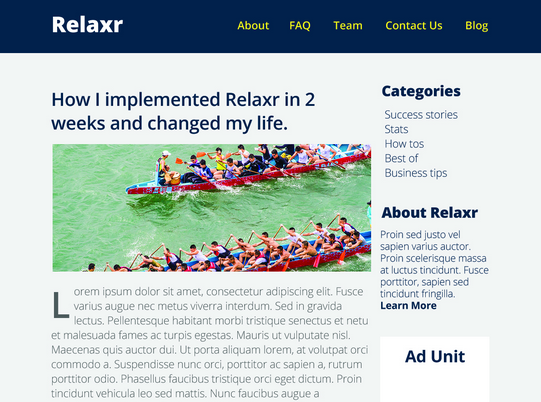

I recently graduated from a Front-End Web Development course at General Assembly where I learned HTML, CSS, JavaScript, jQuery and how to be an awesome Front-End Web Developer! During my spare time, I enjoy senior water aerobics, pickling, and spending time with my goldfish, Jerry.
Developed a multi-column layout blog, landing page, and contact forms that render on mobile devices.

Used a design team's wireframes to develop this company's responsive homepage.
Built web app prototype that allows users to store and quickly retrieve photos using keywords.